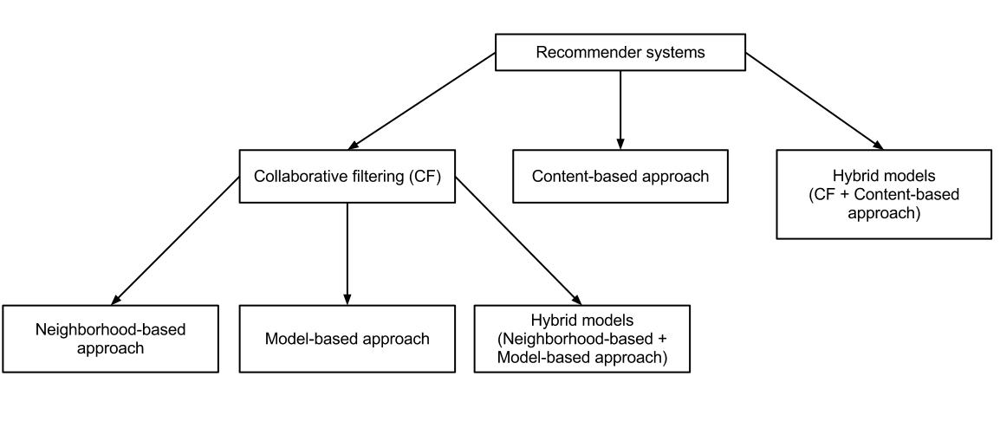

2. Algorithms & Data Structures
The core intelligence behind Discovery+’s recommendation engine lies in a combination of machine learning algorithms and efficient data structures. These help understand what the user likes, predict future preferences, and serve relevant content instantly. Let’s break down each component:
🔹 Collaborative Filtering
This is the heart of modern recommendation systems. The idea is simple: if two users watched similar shows before, they might enjoy similar shows in the future. It uses a user-item interaction matrix (like a giant Excel sheet) where rows are users, columns are items (videos), and cells record interactions (like a rating or watch event).

- Example: If User A and User B both watched Shows X and Y, and User A also watched Show Z, then User B might like Show Z too.
- This matrix is usually very sparse (most people don’t watch everything), so we need techniques like matrix factorization (explained next) to make sense of it.
🔹 Matrix Factorization
Since the user-item matrix is sparse (mostly empty), we "compress" it into two smaller matrices using a technique called matrix factorization. One matrix represents user preferences, and the other represents item features.[2]
- Imagine we're saying: “User 123 likes thrillers, documentaries, and romantic comedies.” These preferences become a vector: [0.9, 0.4, 0.7]
- Each movie also has a vector: Movie A = [0.8, 0.2, 0.6]
- We compute similarity by multiplying these vectors (dot product). Higher the score, more relevant the movie.
- Amazon Personalize does this using deep matrix factorization under the hood, so you don’t need to build it manually!
Reference: Matrix Factorization - TowardsDataScience
🔹 Nearest Neighbor Search (k-NN)
When new users or items are added (cold start problem), we can’t use past data. Here, k-nearest neighbor (k-NN) algorithms come to the rescue: [3]
- We represent users or items as vectors in a high-dimensional space (like a cloud of dots).
- We measure similarity using cosine similarity or Euclidean distance.
- Example: If a user just watched a nature documentary, we recommend another similar documentary by finding the closest dot (nearest neighbor) in vector space.
- Efficient search is done using structures like KD-Trees or Ball Trees to avoid scanning the entire space.
Reference: Nearest Neighbor Search - scikit-learn
🔹 Ranking Algorithms (Learn-to-Rank)
It's not enough to know what the user might like—we also need to rank content in order of relevance. This is where ranking algorithms come in. [4]
- BPR (Bayesian Personalized Ranking): Assumes users prefer certain items over others based on implicit signals like watch time, skips, or likes.
- LambdaRank: Focuses on adjusting the order of results so that more relevant items come on top based on user behavior.
- Amazon Personalize uses these under the hood and evaluates using metrics like Mean Reciprocal Rank (MRR)—higher score = better ranking.
Reference: Bayesian Personalized Ranking - PapersWithCode
🔸 Summary: Why These Algorithms Work Together
- Collaborative Filtering: Captures behavior-based patterns.
- Matrix Factorization: Compresses data, learns hidden traits.
- k-NN: Helps with new users/items.
- Ranking: Makes top recommendations more relevant.
🧠 Backend Data Structures Used
- Sparse Matrices: Used to represent user-item interactions compactly.
- Hash Maps / Dictionaries: Used for real-time session-based interaction logs.
- Vectors & Embeddings: Used to place users/items in a space for similarity computations.
- KD-Trees/Ball Trees: Fast search of similar users/items in multi-dimensional space.
💡 Real Amazon Personalize Runtime API Usage
This Python snippet shows how Discovery+ would fetch recommendations using Amazon Personalize’s API:
import boto3
# Create runtime client
runtime = boto3.client('personalize-runtime')
# Request recommendations for a user
response = runtime.get_recommendations(
campaignArn='arn:aws:personalize:region:account-id:campaign/DiscoveryCampaign',
userId='user123'
)
# Print top item recommendations
for item in response['itemList']:
print("Recommended Item ID:", item['itemId'])Internally, this fetches recommendations based on the user’s historical interactions. The logic (matrix factorization, collaborative filtering, etc.) is abstracted away, but this gives you real-time results with low latency.
Reference: Amazon Personalize Documentation